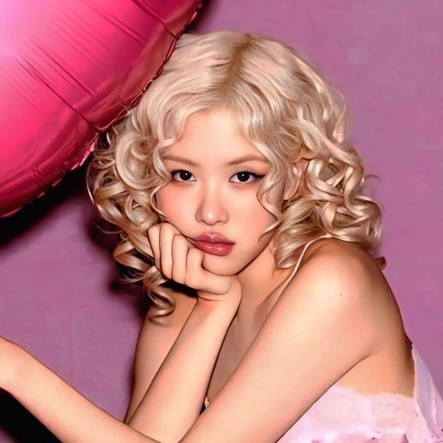

ROSEANE PARK/Park Chae-young

Nome: Roseanne Park
Nome artístico: Rosé
Nascimento: 11 de fevereiro de 1997
Idade: 29 anos
Pais de origem: Nova zelandia (mas cresceu na Australia)
Rosé é conhecida principalmente por sua voz e estilo vocal característico, sendo main vocal do grupo
Sua carreira solo começou oficialmente em 2021, quando lançou o single album R, contendo “On The Ground” e “Gone”, que ganhou premios e chegou a competir entre elas em uma premiação de tv
Em 2024, Rosé alcançou um dos maiores momentos de sua carreira solo com “APT.”, colaboração com Bruno Mars. A música se tornou um enorme sucesso mundial e levou Rosé a alcançar mais de 1 bilhão de vizualizações nas plataformas digitais.
Ela também lançou o álbum rosie, seu primeiro álbum de estúdio solo, consolidando sua carreira internacional.
Rosé possui 26 milhões de ouvintes mensais no Spotify.
Sua carreira solo também rendeu diversos prêmios e recordes, especialmente relacionados ao sucesso de “APT.” e de seu álbum rosie.
fun fact: Rose ja teve o cabelo castanho e vermelho, mas agora mantem ele no loiro e é uma piada no fandom dizendo que antes da rose pintar o cabelo ela era a park chae-young e depois de pintar o cabelo de loiro a park chae-young saiu do grupo e entrou a Rose
ships: Lisa+Rose= Chaelisa
Jisoo+Rose= Chaesoo
Jennie+Rose= Chaennie
Voltar